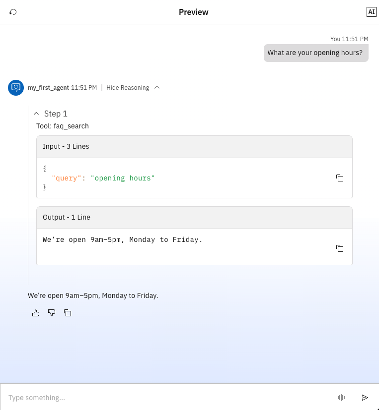
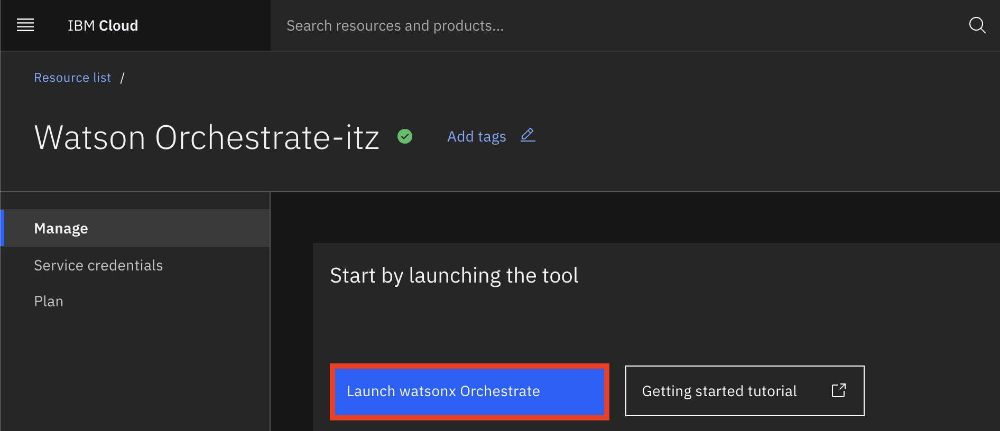
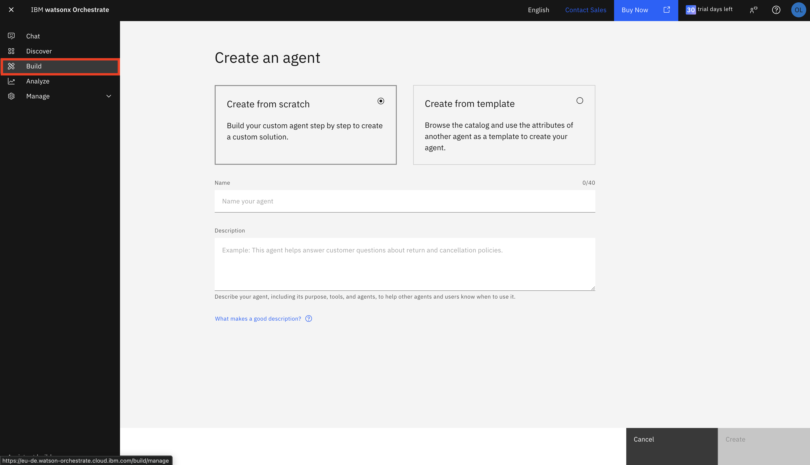
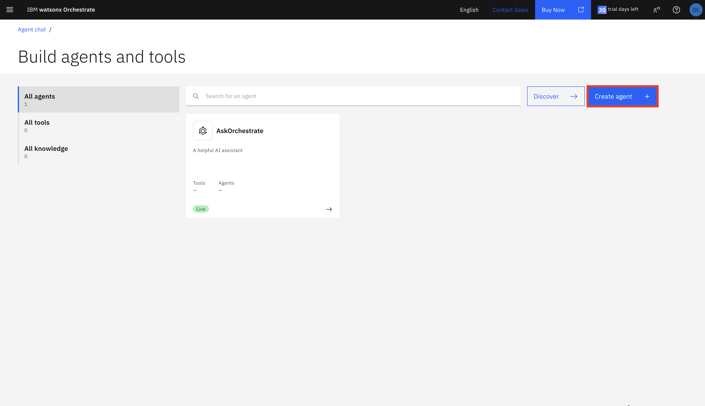
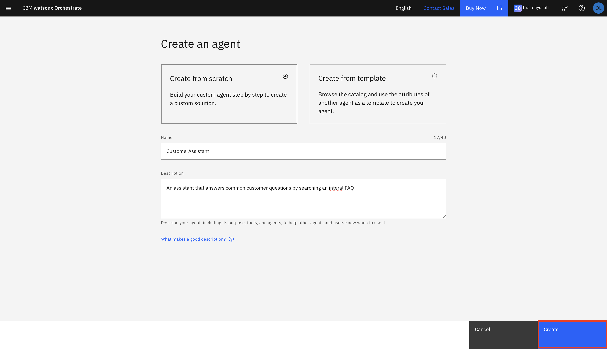
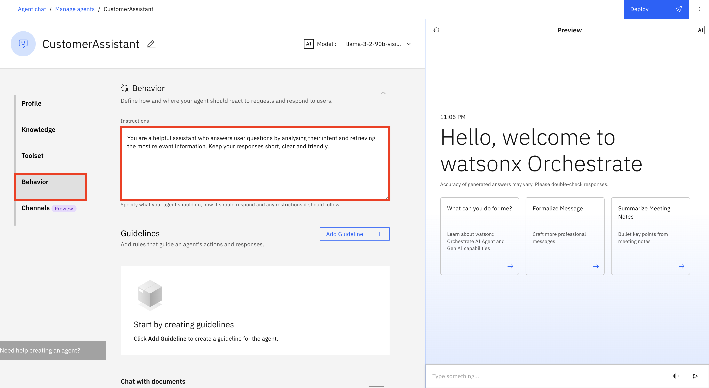
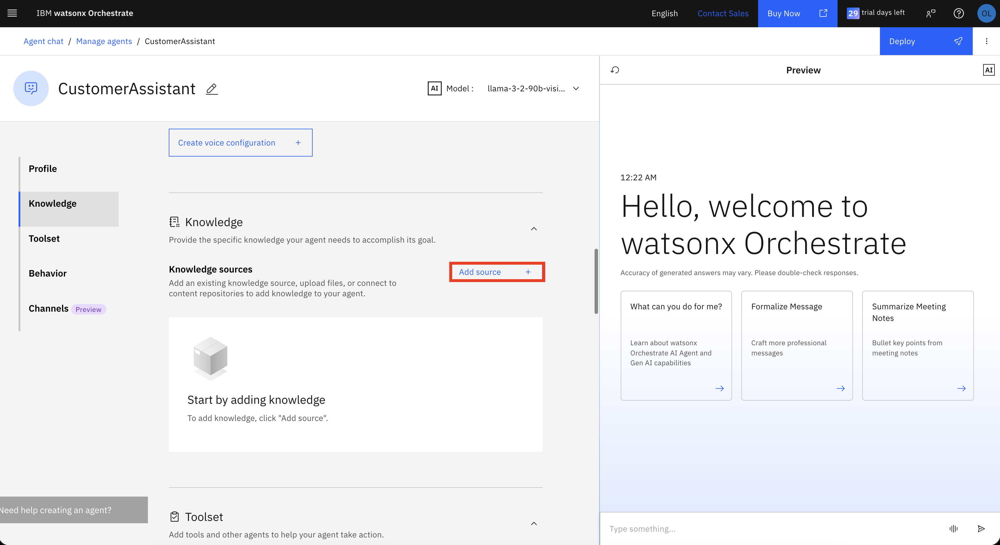
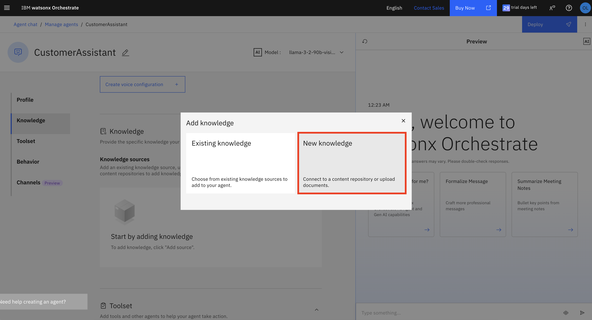
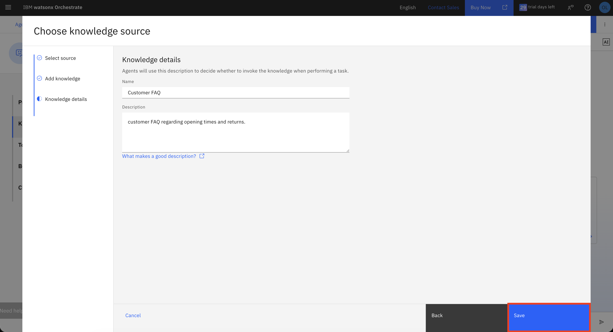
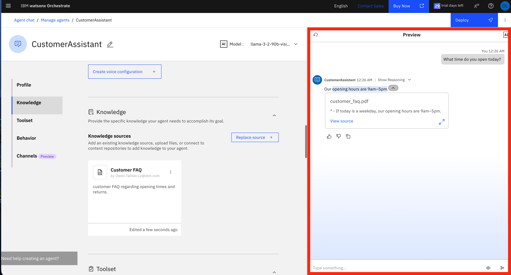

Choose your build path
watsonx Orchestrate gives you two ways to build an agent: the Agent Development Kit, or the visual Agent Builder. This walkthrough follows both routes to the same small customer support assistant.
When I use the Agent Development Kit
I use the kit when I need custom Python tools, external service integrations, or agent configuration that I can keep in version control. The agent definition and tool implementation live alongside each other, and I import them into my Orchestrate environment from the command line.
When I use the visual builder
The visual builder is useful for quickly trying a conversation, connecting knowledge, and working through behaviour with a business user. You can start with a blank agent, add its sources and capabilities, and test it in the same interface. Both routes let you work on the agent in Orchestrate.
This is the detailed walkthrough from my original portfolio, with the setup and agent configuration refreshed. The screenshots show the original interface; some labels and layouts may differ in your instance.
The example: a coffee shop FAQ assistant
Our agent will answer a few common questions using a small FAQ. The example is deliberately small so that you can see what the model does and what the tool or knowledge source contributes.
- What time do you open today?
- How long do refunds normally take?
- Can I return something I bought last week?
The developer route uses a Python function containing a tiny FAQ dictionary. The visual route uses the downloadable FAQ document as its knowledge source. In a larger system, the same boundary could connect to a help centre, company documentation, or a service API.
By the end, you should be able to open the agent in Orchestrate, ask a supported question, inspect its response, and check how it handles a question its source cannot answer.

DEVELOPER ROUTE / 01
Install the kit and connect your instance
1. Create a Python environment
The commands below use Python 3.11 on macOS or Linux. Start by checking your installed version. If you use Homebrew on macOS and need Python 3.11, install it with the command below.
python3.11 --version
brew install python@3.11Create your project, activate a virtual environment, and install the package. Keep the virtual environment local to this project so its dependencies do not affect your other work.
mkdir my-adk-project
cd my-adk-project
python3.11 -m venv .venv
source .venv/bin/activate
python -m pip install --upgrade ibm-watsonx-orchestrate
orchestrate --help
On Windows, create the environment with
py -3.11 -m venv .venv and activate it from PowerShell with
.\.venv\Scripts\Activate.ps1. The remaining Orchestrate
commands are the same. See
IBM’s installation guide
for the supported setup.
2. Lay out the project
mkdir agents tools knowledge flowsmy-adk-project/
├── agents/
│ └── customer_assistant.yaml
├── tools/
│ └── faq_search.py
├── knowledge/
├── flows/
└── .venv/
The agent definition belongs in agents/; the Python
implementation belongs in tools/. The knowledge and flows
directories give you somewhere to put those resources when you extend the
example.
3. Get the instance URL and API key
For an IBM Cloud instance, launch watsonx Orchestrate, open your user menu, choose Settings, and open API details. Copy the service instance URL. Use Generate API key there to follow the IBM Cloud key creation flow for that instance.
The service URL is the API endpoint shown in API details, rather than the URL in your browser’s address bar. It will resemble this example; substitute your own region and instance identifier.
https://api.eu-de.watson-orchestrate.cloud.ibm.com/instances/YOUR_INSTANCE_ID4. Register and activate the environment
Use cloud-dev as a convenient environment name. Replace the
example URL with the value from API details. The activation flow requests
your API key.
orchestrate env add -n cloud-dev \
-u "https://api.eu-de.watson-orchestrate.cloud.ibm.com/instances/YOUR_INSTANCE_ID" \
--type ibm_iam --activate
orchestrate env list
Confirm that cloud-dev is the active environment before
importing anything. To return to it later, run
orchestrate env activate cloud-dev. Other hosting environments
use different authentication types; follow
IBM’s environment configuration guide
for your deployment.
What happened to the credentials file?
My original walkthrough included a manually written
.orchestrate/credentials.json. This version uses the supported
environment commands to configure the connection. Keep API keys out of the
agent YAML, Python tool, screenshots, and repository. An integration that
needs its own service credentials should use the platform’s connection
configuration.
DEVELOPER ROUTE / 02
Create the Python FAQ tool
Save this as tools/faq_search.py. The decorator exposes the
function as an Orchestrate tool. Its description, input type, and return
type describe the interface the agent will use.
from ibm_watsonx_orchestrate.agent_builder.tools import tool
@tool
def faq_search(query: str) -> str:
"""Look up opening hours or refund timing in the coffee shop FAQ.
Args:
query: The customer's question, or a keyword such as hours or refund.
Returns:
A matching FAQ answer, or a message that no answer was found.
"""
faqs = {
"hours": "We’re open 9am–5pm, Monday to Friday.",
"refund": "Refunds are processed within 5–7 working days.",
}
question = query.lower()
for keyword, answer in faqs.items():
if keyword in question:
return answer
return "I couldn't find that in the FAQ."The lookup is intentionally a keyword match. A question containing “hours” matches directly; a question phrased as “When do you open?” requires the agent to choose a useful search term. There is no returns policy in this dictionary, so a question about returns should receive the fallback rather than an invented policy.
Tools are optional when you create an agent, but this example uses one. Import it before importing an agent that refers to it.
orchestrate tools import -k python -f tools/faq_search.pyWhen you extend the function to a real source, return enough information to inspect the answer and handle a missing result explicitly. See IBM’s tool documentation for the supported tool formats and import paths.
DEVELOPER ROUTE / 03
Define, import, and verify the agent
1. Choose an available model
orchestrate models list
Copy a model identifier available in your instance. Replace
YOUR_AVAILABLE_MODEL_ID below with that value; do not import
the placeholder. The llm field is a string containing that
identifier.
2. Write the agent definition
Save the following as agents/customer_assistant.yaml. The
instructions tell the agent when to call the FAQ tool and what to do when
the source has no answer.
spec_version: v1
kind: native
name: CustomerAssistant
description: >
Answers coffee shop questions about opening hours and refunds
using a small FAQ tool.
llm: YOUR_AVAILABLE_MODEL_ID
style: react_core
instructions: |
Use faq_search for questions about this coffee shop.
Turn the question into a relevant search term when useful.
Answer from the tool result and keep the reply short and friendly.
If the FAQ has no answer, say that the information is unavailable.
Do not invent opening hours, refunds, or returns policies.
tools:
- faq_search
collaborators: []
The name is the agent’s identifier in this example.
kind: native identifies an agent running within Orchestrate.
The tool name must match the tool you imported. The specification also
supports other configuration options; use
IBM’s native agent reference
when adding them.
3. Import and list the agent
orchestrate agents import -f agents/customer_assistant.yaml
orchestrate agents listAfter a successful import, open the Agent Builder and find CustomerAssistant. Check its instructions, model, and toolset. Then use the preview chat to try the questions from the example.
4. Iterate on the configuration
Edit the local definition or tool, import the changed resource, and rerun
the same questions. Keeping those questions fixed makes it easier to see
whether your change improved the behaviour. Use
orchestrate agents --help to inspect the management commands
supported by your installed kit.
The original walkthrough used removal followed by a fresh import as a reset. Keep that for a disposable test agent when a reset is actually needed; a normal edit should not start by deleting an agent that other people use.
VISUAL ROUTE
Build the same assistant in the interface
1. Launch your Orchestrate instance
Open your IBM Cloud resource list, select the Orchestrate instance, and launch it.

2. Open Build and create an agent
Open the main menu and choose Build, then Create agent. Choose a blank agent so you can configure the assistant yourself.


3. Set the name and description
Use CustomerAssistant for the name. A description such as “Answers customer questions using the coffee shop FAQ” explains the agent’s purpose without claiming capabilities you have not connected.

4. Configure behaviour
Define how the assistant should answer. This is the equivalent of the instructions in the developer route.
You answer questions using the coffee shop FAQ.
Keep responses short, clear, and friendly.
Use the supplied knowledge for opening hours and shop policies.
If the answer is missing, say so and suggest contacting the shop.
Do not invent details that are absent from the FAQ.
5. Add the FAQ as knowledge
The builder separates what the agent can read, what it can do, and how it should respond. For this route, we only need a knowledge source and instructions. A toolset becomes useful when the agent needs to call a service or perform an action.
Download the original sample FAQ document, then add it to the agent’s Knowledge section. Choose a new knowledge source, upload the document, and fill in the source details. Give it a name and description that make its contents clear.



Once the source is ready, confirm that it is attached to this agent. Review the name, description, behaviour, and capabilities before testing. IBM’s Agent Builder tutorial shows the current entry points.
Test the answers and the source boundary
Open the preview chat and ask the original example questions. Inspect the available tool calls and source information alongside the final answer.
What time do you open today?
How long do refunds take?
Can I return something I bought last week?
For the Python route, expect the opening hours and refund timing from the dictionary. The returns question has no matching entry and should produce an honest missing-information response. For the document route, compare each answer with what the FAQ actually says. The two routes use different sources, so check each against its own source.
A few useful follow-up checks
- Paraphrase: “When can I visit the shop?” should still lead to the opening-hours information.
- Ambiguity: “Can you help with a refund?” may need a clarifying question rather than an invented transaction status.
- Missing information: ask about a service the source does not mention and check that the assistant admits the gap.
- Repeatability: rerun the same questions after changing instructions, tools, or knowledge.
If something does not work
- The import fails: check the active environment, model identifier, YAML formatting, and exact imported tool name.
- The tool is skipped: make its purpose and the instruction to use it explicit; inspect the tool input the agent chose.
- The lookup returns no match: remember that the example uses keywords. Check the query instead of assuming retrieval is semantic.
- The document cannot answer: check that the knowledge source is ready, attached to the agent, and contains the requested information.
You now have the same small assistant built through either route, plus a way to inspect its behaviour. From here, replace the dictionary with a real source, expand the knowledge set, or connect an action. Add one capability at a time and keep the checks alongside it.